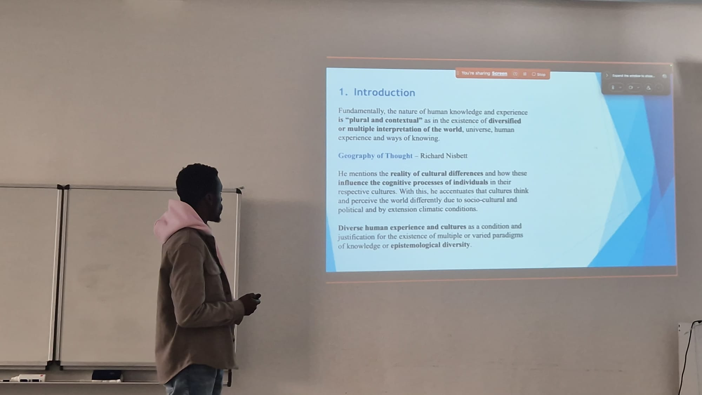

Lasst die Ideologien sterben und die Menschen leben - Wie Ideologien das Leben verändern

Autor: Christian Gyamfi
Datum: 12. September 2026
Der Satz „lasst die Ideologien sterben und die Menschen leben“ fordert dazu auf, den Menschen über jede Überzeugung zu stellen. Kein politisches Programm, keine Religion und keine Weltanschauung sollte wichtiger sein als das menschliches Leben.
Was ist Ideologie?
Eine Ideologie ist eine bestimmte Vorstellung davon, wie die Welt ist, warum sie so ist und wie sie sein sollte.Ideologie wird problematisch, wenn sie in einen Behauptungsmodus verfällt: Unsere Erklärung der Welt und der Gesellschaft ist die richtige, und deshalb muss das Leben nach unseren Prinzipien gestaltet werden. Aus dem Anspruch, die Welt richtig zu erklären, entsteht schließlich der Anspruch, die Wahrheit zu besitzen. Wer die eigene Sichtweise nicht teilt, gilt dann nicht mehr lediglich als jemand, der anders denkt, sondern als jemand, der falsch liegt. Aus dem Andersdenkenden kann so der Gegner werden.Aus dem Anspruch, die Welt richtig zu erklären, entsteht schließlich die uneingeschränkte Behauptung, die Wahrheit zu besitzen. Wer die eigene Sichtweise nicht teilt, gilt dann nicht mehr lediglich als jemand, der anders denkt, sondern als jemand, der falsch liegt. Aus dem Andersdenkenden kann so der Gegner werden. Wer sich streng genommen im Modus des Wahrheitsbesitzes befindet, hinterfragt oder überdenkt die eigene Position kaum noch. Denn wer glaubt, die Wahrheit bereits zu besitzen, sieht wenig Anlass, danach zu fragen, ob die eigene Sichtweise falsch sein könnte. Die Suche nach Wahrheit kommt dadurch zum Stillstand.Hier liegt ein entscheidender Unterschied zwischen Wahrheitssuche und Wahrheitsbesitz: Wer Wahrheit sucht, bleibt offen für Korrektur. Wer glaubt, sie vollständig zu besitzen, muss die eigene Position nicht mehr prüfen. Kritik wird dann nicht als Möglichkeit zur Erkenntnis verstanden, sondern als Angriff auf eine bereits feststehende Gewissheit.Vielleicht ist deshalb nicht die Frage entscheidend, wer die Wahrheit besitzt, sondern wer bereit ist, sich von der Wahrheit korrigieren zu lassen.